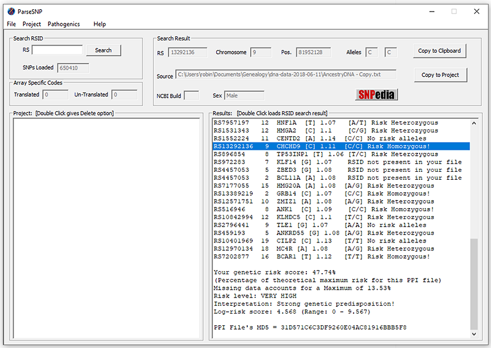

ParseSNP - Utilizes Consumer 'Ancestry' type RAW genetic files.

Most users can use the 64 bit version below
64 bit Download for Windows
For anyone still using a 32 bit version of Windows
32 bit Download for Windows
GitHub Repository